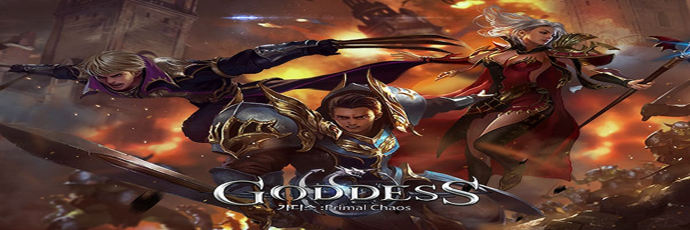

Jogue o jogo para celular MMORPG de ação 3D cinematográfico "Goddess: Primal Chaos", seja transformado em um herói para salvar o mundo, viajando de volta no tempo e no espaço até antes do nascimento do 'Tyrant'. Sua missão? Salve a humanidade, os monstros e o mundo espiritual!
Escolha entre três classes incríveis: Invocador, Guerreiro ou Assassino e lute contra milhões de jogadores online neste mundo de fantasia único! Colete itens, desenvolva seu herói e conquiste várias jogabilidades.Parta em sua aventura por este excitante novo mundo agora mesmo!
Conhecido como 'Heroes of Chaos' quando foi criado, Goddess Primal Chaos possui diversas características, tais como: Mecânicas facéis de controlar, combos de um toque e incrível experiência de luta. Missões inovadoras e dinâmicas e desafiadoras 'Tarefas Urgentes'. Recrute seus próprios heróis de batalha, com dezenas de tipos diferentes disponíveis. Junte forças com Deusas e vença o mundo dos demônios . Se junte com uma equipe , e poderá interagir com jogadores de todo o continente em que seu servidor está localizado, em masmorras multiplayer, Covil de chefes e muito mais.Poderoso sistema de aliança, use lojas e tecnologia da aliança para impulsionar seu personagem ou trocar itens com outros jogadores - Diversos eventos 1v1, 2v2, 3v3, batalhas de equipe e guerra de alianças ou escolha entre vários modos PvP. Grande diversidade de montarias, equipamentos, armas e trajes legais exclusivos.